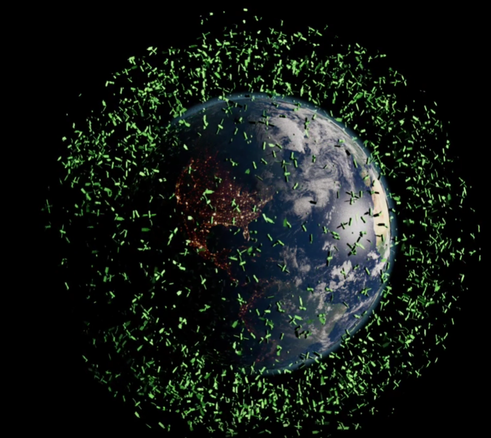

DEMOCRATIZANDO
A SEGURANÇA
ESPACIAL
O lixo espacial ameaça satélites, A Open Orbit resolve isso com dados de segurança orbital em código aberto para todos

PRECISÃO PARA QUALQUER MISSÃO
BENEFÍCIOS E APLICAÇÃO PRÁTICA
Visibilidade Orbital em Tempo Real
A SEP rastreia milhares de detritos espaciais garantindo a segurança de satélites críticos
Alertas de Colisão Imediata
Sensores detectam aproximações perigosas e notificam os operadores em milissegundos
Relatórios de Sustentabilidade
Gera documentos automáticos sobre o uso da órbita garantindo conformidade com as normas internacionais

TECNOLOGIA DE PONTA

Inteligência em Python
Processamento de dados orbitais complexos utilizando bibliotecas de alta performance para cálculos de trajetória
Edge Computing com Arduino
Sensores conectados para monitoramento local e resposta rápida em dispositivos de baixo consumo de energia
PRINCIPAIS OBJETIVOS
Monitoramento Global
Criar uma rede de monitoramento orbital para uma maior segurança e controle de satélites
Democratização
Fornecer dados gratuitos para instituições de e empresas aeroespaciais
Alerta veloz
Reduzir em 90% o tempo de resposta para alertas de colisão iminente
Open Orbit
Nossa Missão
Nascemos para tornar o espaço um lugar seguro, desenvolvemos soluções acessíveis para problemas que antes só grandes agências resolviam
Público Alvo
Empresas aeroespaciais, empresas de satélites, agências espaciais, pesquisadores e entusiastas por astronomia

Desenvolvedores
- Enrico Bertolacini
- Enzo Eccheli
- Lucas Kaoru
- Lucas Octaviano
- Matheus Lemos
QUIZ
TESTE SEUS CONHECIMENTOS
Descubra o quanto você sabe sobre segurança espacial e a ameaça dos lixos espaciais em nosso desafio interativo
Clique aqui e acesse!